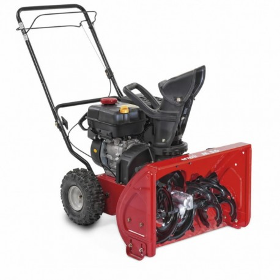

Benzininis sniego valytuvas HECHT 8616 - AivaShop.lt Sniego valytuvai skirstomi į vienpakopius ir dvipakopius. Pirmieji yra skirti nesudėtingiems namų ūkio darbams, pavyzdžiui, nedideliems kiemams, takeliams pravalyti. Vienpakopis sniego valytuvas yra nesudėtingos konstrukcijos įrenginys, bet jo visiškai pakaks sniegui aplink namus nuvalyti.
Sniego valytuvai | Ratiniai gaminiai | Elektroninė parduotuvė Sniego valytuvai ir sniego pūstuvai – tai įrenginiai, atliekantys sniego valymo darbus už Jus bei padedantys sutaupyti daug jėgų ir laiko. Benzininiai valytuvai labiau tinka dideliems, sunkaus sumindyto sniego plotams valyti, nes jie yra nepriklausomi nuo elektros tiekimo.
Rankinis Sniego Valytuvas su Ratukais, Sudedamas ... SNIEGO VALYTUVAS AL-KO SNOWLINE 760 TE Kodas: 400371804512 Su nauju SnowLine 760 TE sniego valytuvu žiema nebaisi. Vikšrinė pavara užtikrina sukibimą su danga ir manevringumą net esant nepalankioms oro salygoms. 6 pavaros į priekį ir 2 pavaros atgal leidžia patogiai reguliuoti važiavimo greitį.
Sniego valytuvas - laisvė judėti žiemą - Stokker ... Sodo technika iš Stokker - beveik tobula našumo ir komforto kombinacija. Kokybė ir efektyvumas, vertinami visame pasaulyje. ECHO, Cub Cadet, Ambrogio, Worx.
Sniego valytuvai - Husqvarna Sniego valytuvas motorinė šluota Fuxtec FX 1196 Keturi viename: sniego valytuvas, sniego pūtikas, žemių stumdytuvas, šluota. Visi padargai lengvai keičiami. -greitas pristatymas -garantinis ir po garantinis remontas -atsarginių dalių ir...
Sniego pūstuvai, valytuvai | Sniego valymo įrankiai ... Sniego valytuvas motorinė šluota Fuxtec FX 1196 Keturi viename: sniego valytuvas, sniego pūtikas, žemių stumdytuvas, šluota. Visi padargai lengvai keičiami. -PVM sąskaitos faktūros -lizingas -greitas pristatymas -garantinis ir po garantinis...
Sniego valytuvas benzininis HECHT 9533 Internetu pigiau ... Sniego valytuvas Cub Cadet XS3 66 SWE Palyginti su tradiciniais dviejų pakopų sniego valytuvais, "Cub Cadet 3X" serija iki 50% greičiau nuvalo gilų sniegą ir leidžia be vargo, energingai ir patogiai pašalinti 45 cm storio sniego sluoksnį. 3X pjaustytuvas gali net pralaušti sniego pusnis, ku..
Sniego valytuvai
2020.10.29 08:47

Informacija Pirkimo gidas Apmokėjimas Pristatymas Garantijos ir grąžinimas Prekių ženklai Kontaktai Prisijungti Registracija
Pagalba telefonu I-VI, 08:00-20:00: +370 615 99000
Nemokamas pristatymas
NEMOKAMAS pristatymas yra taikomas visoje Lietuvoje, kai užsakomų prekių kaina yra didesnė nei 300 Eur.
Prekių grąžinimas
Pirkėjas turi teisę grąžinti nepatikusią prekę per 14 dienų.
100% kokybės garantija
Tik patikimi prekiniai ženklai su garantiniu ir pogarantiniu aptarnavimu!
Krepšelis tuščias prekė(s) - 0.00€ Krepšelis tuščias MENIU Matavimo prietaisai + Kultivatoriai + Plovimo/valymo įranga + Akcijos + Kategorijos Akumuliatoriniai įrankiai + Suktuvai, gręžtuvai Veržliasukiai Perforatoriai Siaurapjūkliai Kampiniai šlifuokliai Kabiamušiai Prožektoriai Krovikliai, radijai Daugiafunkciniai įrankiai Skardos žirklės Pjūklai + Tiesiniai pjūklai Diskiniai pjūklai Grandininiai pjūklai Juostiniai pjūklai Plieno strypų žirklės (armatūros) Akumuliatorinių įrankių komplektai Elektriniai įrankiai + Suktuvai Gręžtuvai + Nesmūginiai gręžtuvai Kampiniai gręžtuvai Smūginiai gręžtuvai Maišyklės Smūginiai veržliasukiai Perforatoriai SDS Plus Perforatoriai SDS Max Atskėlimo plaktukai Kampiniai šlifuokliai + Kampiniai šlifuokliai 115 mm Kampiniai šlifuokliai 125 mm Kampiniai šlifuokliai 150 mm Kampiniai šlifuokliai 180 mm Kampiniai šlifuokliai 230 mm Kampiniai šlifuokliai 300 mm Poliravimo mašinėlės Pjūklai + Universalūs tiesiniai pjūklai Diskiniai rankiniai pjūklai Diskiniai pjūklai įleidžiami Skersinio pjovimo staklės Metalo pjaustyklės Metalo pjaustyklės Siaurapjūkliai Šlifuokliai + Tiesiniai šlifuokliai Juostiniai šlifuokliai Vibraciniai šlifuokliai Ekscentriniai šlifuokliai Frezeriai + Frezeriai vertikalūs Frezeriai kaištiniams junginiams Aliuminio plokščių frezeriai Frezeriai-grandikliai Frezeriai briaunoms Obliai Galąstuvai Techniniai fenai Klijavimo pistoletai Kabiamušiai Metalo žirklės + Metalo žirklės kerpančios Metalo žirklės iškertančios Dulkių siurbliai Mūro frezos kanalams Betono maišyklės Deimantinio gręžimo sistemos Betono ir akmens apdirbimas Kiti įrankiai Staklės + Staklės Plytelių pjovimo staklės Įrankių priedai + Festool SYSTAINER sistemos Kreipiančiosios liniuotės Akumuliatoriai, krovikliai Kiti priedai Priedai diskiniams rankiniams pjūklams + Diskai medžio pjovimui 160 mm Diskai medžio pjovimui 190 mm Griebtuvai (patronai) Priedų rinkiniai Priedai daugiafunkciniams įrankiams Multifunkciniai / hobby įrankiai + Akumuliatoriniai įrankiai Elektriniai rotaciniai įrankiai Graviravimo įrankiai Degikliai Lituokliai Įvairūs įrankiai HOBBY įrankių priedai + Priedai valymui/poliravimui Priedai graviravimui Priedai frezavimui Priedai galandimui Priedai šlifavimui Priedai pjovimui Priedų komplektai Priedai Dremel TRIO Priedai Dremel Multi-Max Kiti priedai Pneumatiniai įrankiai + Veržliasukiai Gręžtuvai Pneumatiniai suktuvai Šlifuokliai Pneumatiniai poliruokliai Kniedikliai Dažymo pistoletai Kampiniai šlifuokliai Pneumatiniai kaltai Pneumatiniai viniakaliai Kiti įrankiai Pneumatinių įrankių priedai + Filtrai,tepalinės Priedai viniakalėms Matavimo prietaisai + Atstumų matuokliai Lazeriniai nivelyrai Optiniai nivelyrai Kryžminių linijų lazeriai Ieškikliai Kampų matuokliai Drėgnomačiai Gulsčiukai Matavimo juostos (ruletės) Stovai, liniuotės, priedai Matavimo ratukai Kiti matavimo prietaisai Sodo technika - Kultivatoriai Trimeriai benzininiai, krūmapjovės Trimeriai akumuliatoriniai Žoliapjovės-trimeriai elektriniai Vejapjovės akumuliatorinės Vejapjovės elektrinės Vejapjovės benzininės nesavaeigės Vejapjovės benzininės savaeigės Vejapjovės mechaninės Vejos traktoriai Šienapjovės Vejos purentuvai, aeratoriai Žirklės žolei ir krūmams Grandininiai pjūklai akumuliatoriniai Grandininiai pjūklai elektriniai Grandininiai benzininiai pjūklai Šakų smulkintuvai Vandens siurbliai Gyvatvorių žirklės elektrinės Gyvatvorių žirklės akumuliatorinės Gyvatvorių žirklės benzininės Barstytuvai Vejapjovės robotai Malkų skaldikliai Lapų pūtikai benzininiai Akumuliatoriniai lapų pūstuvai Lapų pūtikai elektriniai Sniego valytuvai Sodo technikos priedai + Alyvos, tepalai Valai, peiliai, galvutės Priedai vejapjovėms Priedai kultivatoriams Priedai pjūklams Priedai gyvatvorių žirklėms Priedai trimeriams Priedai traktoriams Multisystem trimeriams Kiti priedai Sodo įrankiai + Sekatoriai Žirklės Genėtuvai, ravėtuvai Pjūkleliai ir peiliai Kastuvai, šakės ir kt. Grėbliai Smulkūs daržo įrankiai Kirviai ir kiti miško įrankiai Šepečiai Purkštuvai Laistymo įranga Įvairūs Oro sausintuvai (drėgmės rinktuvai) + Buitiniai drėgmės surinktuvai Profesionalūs drėgmės surinktuvai Pusiau profesionalūs oro sausintuvai Adsorbciniai sausintuvai Oro drėkintuvai Plovimo/valymo įranga + Aukšto slėgio plovimo įranga Garo valytuvai / lygintuvai, langų valytuvai Dulkių siurbliai + Sauso-drėgno valymo siurbliai Sauso valymo siurbliai Šluotos, grindų poliravimo mašinos Plovimo-valymo įrangos priedai + Plovimo chemija Plovimo antgaliai Žarnos Kiti priedai Šildytuvai + Dyzeliniai šildytuvai Dujiniai šildytuvai Elektriniai šildytuvai Infraraudonųjų spindulių šildytuvai Tepaliniai radiatoriai Termoventiliatoriai Konvektoriai Priedai Rankiniai įrankiai + Raktai, veržliarakčiai Galvutės, galvučių rinkiniai Atsuktuvai, antgaliai Terkšlės Generatoriai + Generatoriai benzininiai Generatoriai dyzeliniai Kompresoriai Kopėčios, pastoliai + Kopėčios Pastoliai Sriegikliai, sriegpjovės + Sriegikliai + Sriegikliai spiraliniai DIN 352 Sriegiklių laikikliai DIN 1814 Sriegikliai DIN 352 Grąžtai, karūnos + Grąžtai metalui + Grąžtai metalui HSS DIN 338 Grąžtai metalui HSS DIN 338 A1 Grąžtai metalui HSS DIN 338 nutekintu kotu Prailginti grąžtai metalui HSS DIN 340 Grąžtai metalui HSS kūginiu kotu DIN 345 Grąžtai metalui HSSCo DIN 338 Labai ilgi grąžtai metalui HSS DIN 1869 Grąžtai metalui HSS kairiniai DIN 338 LN Kietlydinio grąžtai metalui K10 DIN 6539 Universalūs grąžtai Artu Dviejų galų gražtai (skardoms) Platintuvai Bi-metalinės karūnos Bi-metalinių karūnų adapteriai Centravimo grąžtai HSS DIN 333A Lakštiniai grąžtai Pakopiniai grąžtai Grąžtai medžiui + Spiraliniai grąžtai medžiui Ilgi spiraliniai grąžtai medžiui Plunksniniai grąžtai medžiui Sraigtiniai grąžtai medžiui Grąžtai betonui + Grąžtai betonui Grąžtai betonui Festa Professional Universalūs grąžtai Artu Grąžtai stiklui ir keramikai + Grąžtai stiklui Universalūs grąžtai Artu Deimantiniai grąžtai Perforatoriams + Grąžtai betonui SDS plus Grąžtai betonui SDS-max Karūnėlės betonui Kaltai + SDS Plus kaltai SDS-max kaltai Diskai + Deimantiniai pjovimo diskai Frezos + Kaištinės frezos medžiui Baldinės frezos atviroms kiaurymėms Baldinės frezos uždaroms kiaurymėms Frezos medžiui su kietlydinio plokštelėmis Priedai pjūklams + Diskai medžiui + Diskai medžio pjovimui 160 mm Diskai medžio pjovimui 190 mm Kondicionieriai + Mobilūs kondicionieriai Sieniniai kondicionieriai Pradžia Sodo technika Sniego valytuvai
Sniego valytuvai
Prekių ženklai Ariens Honda McCulloch MTD Partner Texas Toro Zongshen Taikyti filtrą 0 Prekių palyginimas Rodyti: 16 25 50 75 100 Rūšiuoti pagal Pavadinimas nuo A Pavadinimas nuo Z Kaina nuo mažiausios Kaina nuo didžiausios Sniego pūstuvas Texas Snow Buster ST1300 Variklis: Elektrinis Galia: 1.3 kW Darbinis plotis: 26 cm Maks.sniego aukštis: 12 cm 79.00€ Be mokesčių: 65.29€ Į krepšelį Pridėti į pageidavimų sąrašą Palyginti Sniego pūstuvas Texas Snow Buster 390 Variklis: Elektrinis Galia: 2.0 kW Darbinis plotis: 39 cm Svoris: 15 kg 179.00€ Be mokesčių: 147.93€ Į krepšelį Pridėti į pageidavimų sąrašą Palyginti Sniego pūstuvas Texas Snow King 415TG Variklis: Loncin LC154F Galia: 1.65 kW Darbinis plotis: 46 cm Maks.sniego aukštis: 28 cm 349.00€ Be mokesčių: 288.43€ Į krepšelį Pridėti į pageidavimų sąrašą Palyginti -7% Sniego valytuvas Zongshen 651 Q Variklio galia: 6,5 Ag Darbinis aukštis: 56 cm Elektrinis starteris: nėra Išmetimo angos apsisukimas: 190° 619.21€ 665.84€ Be mokesčių: 511.74€ Į krepšelį Pridėti į pageidavimų sąrašą Palyginti -10% Sniego valytuvas MTD M 56 Galia: 3,0 kw Kuro bako talpa: 1,9L Ratai: 10"x 4" Garantija: 2 metai 636.87€ 705.22€ Be mokesčių: 526.34€ Į krepšelį Pridėti į pageidavimų sąrašą Palyginti Sniego pūstuvas Texas Snow King 565TG Variklis: Powerline, keturtaktis Galia: 3.2 kW Darbinis plotis: 56 cm Kuro bako talpa: 3.2 L 639.00€ Be mokesčių: 528.10€ Į krepšelį Pridėti į pageidavimų sąrašą Palyginti -7% Sniego valytuvas Zongshen 651 QE Variklio galia: 6,5 Ag Darbinis aukštis: 56 cm Elektrinis starteris: yra Išmetimo angos apsisukimas: 190° 671.63€ 723.76€ Be mokesčių: 555.07€ Į krepšelį Pridėti į pageidavimų sąrašą Palyginti Sniego valytuvas Honda HS 550 EA Galia: 4,6 Ag Darbinis aukštis: 30 cm Išmetimo atstumas: 9m Garantija: 2 metai 786.61€ Be mokesčių: 650.09€ Į krepšelį Pridėti į pageidavimų sąrašą Palyginti Sniego pūstuvas Texas Snow King 617TGE Variklis: Loncin LC170FDS, keturtaktis Galia: 4.4 kW Darbinis plotis: 61 cm Kuro bako talpa: 3.0 L 799.00€ Be mokesčių: 660.33€ Į krepšelį Pridėti į pageidavimų sąrašą Palyginti -15% Sniego valytuvas Ariens Sno-Tec 22 Darbinis tūris: cm³ - 136 Išmetimo atstumas: m - 12 Kuro bako talpa: L - 3,8 Garantija: 2 metai 865.67€ 1,013.67€ Be mokesčių: 715.43€ Į krepšelį Pridėti į pageidavimų sąrašą Palyginti Sniego pūstuvas Texas Snow King 6195BE Variklis: Briggs & Stratton Galia: 4.8 kW Darbinis plotis: 61 cm Kuro bako talpa: 3.0 L 999.00€ Be mokesčių: 825.62€ Į krepšelį Pridėti į pageidavimų sąrašą Palyginti Sniego valytuvas Partner SB 270 Variklio galia: 9 Ag Darbinis aukštis: 58,5 cm Darbinis tūris: 305 cm3 Diferencialo blokatorius: 1,563.66€ Be mokesčių: 1,292.28€ Į krepšelį Pridėti į pageidavimų sąrašą Palyginti -5% Sniego valytuvas Partner SB 300 Variklio galia: 11 Ag Darbinis aukštis: 58,5 cm Darbinis tūris: 342 cm3 Diferencialo blokatorius: 1,705.57€ 1,795.35€ Be mokesčių: 1,409.56€ Į krepšelį Pridėti į pageidavimų sąrašą Palyginti -14% Sniego valytuvas Ariens ST28DLE Darbinis tūris: 305 cm³ Išmetimo atstumas: 15m Kuro bako talpa: 3L Garantija: 2 metai 1,737.43€ 2,027.34€ Be mokesčių: 1,435.89€ Į krepšelį Pridėti į pageidavimų sąrašą Palyginti Sniego valytuvas Toro 826 O Variklio galia: 8 Ag Darbinis tūris: 250 cm3 Išmetimo angos apsisukimas: 200° Išmetimo atstumas: 13 m 1,868.00€ Be mokesčių: 1,543.80€ Į krepšelį Pridėti į pageidavimų sąrašą Palyginti Sniego valytuvas Honda HS622K1 EW Galia: 6 Ag Darbinis aukštis: 50cm Išmetimo angos apsisukimas: 190° Išmetimo atstumas: 14m 2,015.47€ Be mokesčių: 1,665.67€ Į krepšelį Pridėti į pageidavimų sąrašą Palyginti 1 2 | Rodoma nuo 1 iki 16 iš 22 (2 puslapių) Grįžti į viršų
Atstumų matuokliai Lazeriniai nivelyrai Optiniai nivelyrai Kryžminių linijų lazeriai Ieškikliai Kampų matuokliai Drėgnomačiai Gulsčiukai Matavimo juostos (ruletės) Stovai, liniuotės, priedai Matavimo ratukai Kiti matavimo prietaisai
Sodo technika
Kultivatoriai Trimeriai benzininiai, krūmapjovės Trimeriai akumuliatoriniai Žoliapjovės-trimeriai elektriniai Vejapjovės akumuliatorinės Vejapjovės elektrinės Vejapjovės benzininės nesavaeigės Vejapjovės benzininės savaeigės Vejapjovės mechaninės Vejos traktoriai Šienapjovės Vejos purentuvai, aeratoriai Žirklės žolei ir krūmams Grandininiai pjūklai akumuliatoriniai Grandininiai pjūklai elektriniai Grandininiai benzininiai pjūklai Šakų smulkintuvai Vandens siurbliai Gyvatvorių žirklės elektrinės Gyvatvorių žirklės akumuliatorinės Gyvatvorių žirklės benzininės Barstytuvai Vejapjovės robotai Malkų skaldikliai Lapų pūtikai benzininiai Akumuliatoriniai lapų pūstuvai Lapų pūtikai elektriniai Sniego valytuvai
Sekatoriai Žirklės Genėtuvai, ravėtuvai Pjūkleliai ir peiliai Kastuvai, šakės ir kt. Grėbliai Smulkūs daržo įrankiai Kirviai ir kiti miško įrankiai Šepečiai Purkštuvai Laistymo įranga Įvairūs
Oro sausintuvai (drėgmės rinktuvai)
Buitiniai drėgmės surinktuvai Profesionalūs drėgmės surinktuvai Pusiau profesionalūs oro sausintuvai Adsorbciniai sausintuvai
Oro drėkintuvai
Plovimo/valymo įranga
Aukšto slėgio plovimo įranga Garo valytuvai / lygintuvai, langų valytuvai Dulkių siurbliai Šluotos, grindų poliravimo mašinos
Plovimo-valymo įrangos priedai
Plovimo chemija Plovimo antgaliai Žarnos Kiti priedai
Susisiekite su mumis Pirkimo gidas Apmokėjimas Pristatymas Garantijos ir grąžinimas Prekių ženklai Prisijungti Registracija 2007-2016 UAB "TAIGER" Visos teisės saugomos